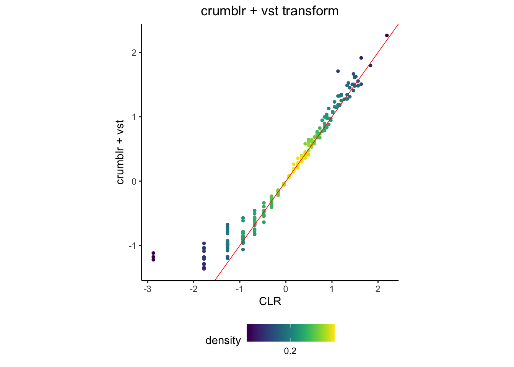
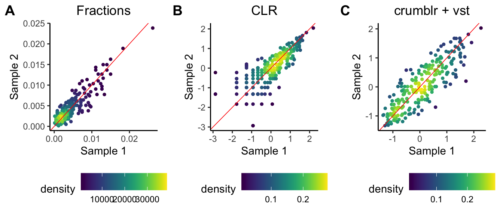
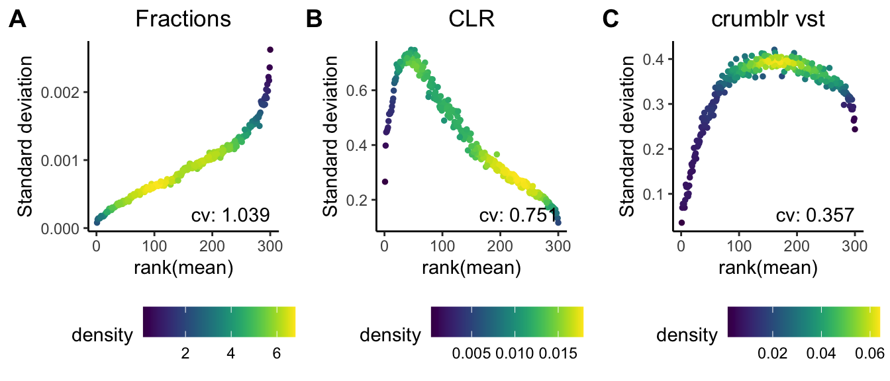

vignettes/vst.Rmd
vst.RmdThe goal of the variance stabilizing transform (VST) is to down-weight imprecise measurements so that downstream analyses focus on signal, rather than being dominated by imprecise observations. The vsn package provides a VST for microarray data, and DESeq2 package provides a VST for RNA-seq using a negative bionomial model. Here we introduce a VST based on crumblr using precision weighted approximation to the centered log-ration (CLR) transform of multinomial dirichlet counts. This VST is very fast even for large datasets and effectively stabilizes the variance of count ratio data compared to using fractions or the CLR transform directly. This improves performance of downstream analaysis such as PCA and clustering.
First, simulate count data:
library(crumblr)
library(cowplot)
set.seed(1)
# set probability of each category
x = rgamma(300, 1, 10)
prob = x / sum(x)
# number of samples
n_samples = 500
# number of counts
nCounts = 3000
# simulate counts from multinomial
counts = t(rmultinom(n_samples, size = nCounts, prob = prob))
colnames(counts) = paste0("cat_", 1:length(prob))
rownames(counts) = paste0("sample_", 1:n_samples)
# compute fractions from counts
# using pseudocount of 0.5
fractions = apply(counts, 1, function(x){
x = x + 0.5
x / sum(x)
})
# run crumblr on counts
cobj = crumblr(counts, tau=1)
vst = function(x){
with(x, E * (sqrt(weights)/rowMeans(sqrt(weights))))
}vst
crumblr performs the centered log-ratio (CLR) transform, and computes the observation-level precision weights. The VST scales the transformed values using the precision weights. Here we see that the vst() is almost linear for sufficiently large CLR values.
df_vst = vst(cobj)
plotScatterDensity(cobj$E[,1], df_vst[,1]) +
geom_abline(color="red", size=.3) +
ggtitle("crumblr + vst transform") +
xlab("CLR") +
ylab("crumblr + vst")
Concordance between two identically distributed sample is show using (A) fractions, (B) CLR and (C) the VST proposed here. For low counts, the CLR in (B) discordant between the two samples due to imprecise measurement. In (C) the VST down-weights these measurements so they are more concordant.
fig1 = plotScatterDensity(fractions[,1], fractions[,2]) +
geom_abline(color="red", size=.3) +
ggtitle("Fractions") +
xlab("Sample 1") +
ylab("Sample 2")
fig2 = plotScatterDensity(cobj$E[,1], cobj$E[,2]) +
geom_abline(color="red", size=.3) +
ggtitle("CLR") +
xlab("Sample 1") +
ylab("Sample 2")
fig3 = plotScatterDensity(df_vst[,1], df_vst[,2]) +
geom_abline(color="red", size=.3) +
ggtitle("crumblr + vst") +
xlab("Sample 1") +
ylab("Sample 2")
plot_grid(fig1, fig2, fig3, labels=LETTERS[1:3], nrow=1)
The variance stabilizing property can be observed empirically. For each feature (i.e. gene, cell type, etc), the standard deviation of the transformed value is compared to the rank of the mean. The variance is stabilized when the coefficient is variation is smaller. While the CLR-transform does provide some variance stabilization compared to using fractions, the VST performs best.
# Mean vs SD plot
fig1 = meanSdPlot(fractions) + ggtitle("Fractions")
fig2 = meanSdPlot(cobj$E) + ggtitle("CLR")
fig3 = meanSdPlot(df_vst) + ggtitle("crumblr vst")
plot_grid(fig1, fig2, fig3, labels=LETTERS[1:3], nrow=1)